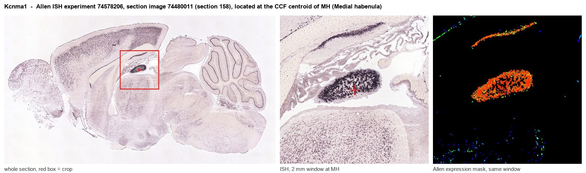
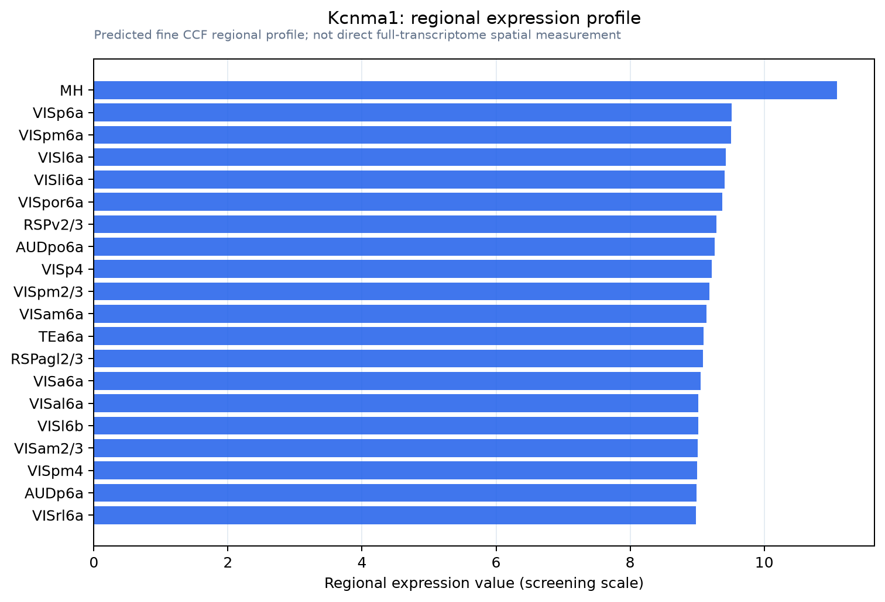

Kcnma1
Calcium-activated potassium channel subunit alpha-1 (BK channel) (BKCA alpha) (Calcium-activated potassium channel, subfamily M subunit alpha-1) (K(VCA)alpha) (KCa1.1) (Maxi K channel) (Slo-alpha) (Sl
Spatial tier: REGION_BIASED · Class: ION_CHANNEL · Top region: MH (Medial habenula) · Positive regions: 49/554
Function in MH: evidence, prediction, innovation
- Gene function
- Kcnma1 encodes the pore-forming alpha subunit of the BK channel (KCa1.1, Slo1), a large-conductance K+ channel opened jointly by depolarisation and intracellular Ca2+. By coupling Ca2+ entry to rapid K+ efflux it sharpens action-potential repolarisation, sets the fast afterhyperpolarisation and limits firing rate; auxiliary beta and gamma (LRRC) subunits tune its Ca2+ and voltage sensitivity. It is also one of the most ethanol-sensitive ion channels known.
- Region function
- The medial habenula is an epithalamic nucleus whose cholinergic (ChAT/Slc17a6) and substance P (Tac1) neurons project almost exclusively through the fasciculus retroflexus to the interpeduncular nucleus. This pathway controls nicotine aversion and withdrawal, anxiety, fear and aversive-memory expression.
- Published in this region
- direct Kawai et al. 2025 (Sci Adv) showed that in mouse MHb neurons nicotine-evoked Ca2+ influx through nAChRs opens a Ca2+-activated Cl- channel to produce a long-lasting refractory period, and that Ca2+-activated BK channels oppose that depolarisation and terminate it. Okhuarobo et al. 2024 (Mol Psychiatry) found ethanol lowers spike threshold in MHb neurons through direct action on BK alpha, an effect abolished in ethanol-insensitive BK alpha K361N knock-in mice. Santos-Torres et al. 2011 tested paxilline on MHb nicotine currents (no effect) and Knaus et al. 1996 mapped dense BK binding across rat brain. Allen ISH shows ~3x MH enrichment (19.6 vs 6.5 grey matter).
- Predicted function
- Prediction: BK is the principal brake preventing runaway firing of MHb cholinergic neurons under strong nicotinic drive, so MHb-restricted Kcnma1 deletion should prolong the nicotine-induced refractory period, raise MHb-IPN output and exaggerate nicotine aversion and withdrawal signs. Conversely a BK opener such as BMS-204352 delivered into MHb should shorten the plateau and blunt nicotine avoidance. Given BK's ethanol sensitivity, MHb BK loss should also shift voluntary ethanol drinking.
- Innovation
- ★★☆☆☆ 2/5 Two recent papers already assign BK a defined role in MHb excitability and ethanol response, so the question is opened rather than untouched.
- Tools
- Kcnma1 global and floxed knockout mice and the ethanol-insensitive BK alpha K361N knock-in (Okhuarobo et al. 2024); blockers paxilline, iberiotoxin and penitrem A; openers NS1619 and BMS-204352; well-validated BK alpha antibodies; combine with ChAT-IRES-Cre (JAX 006410) for MHb-specific deletion.
- References
Direct evidence located at the region

Allen ISH experiment 74578206, section image 74480011 (section 158): the section that contains the CCF centroid of Medial habenula according to the Allen image-to-atlas alignment (reference_to_image), with a 2 mm window around that point. Left: whole section, red box = window. Middle: ISH signal. Right: Allen's expression-mask view of the same window. open this image in the Allen viewer
Direct spatial evidence

Regional expression figure

Predicted WMB × fine-CCF profile; not direct full-transcriptome spatial measurement.
Spatial profile
Evidence and specificity
- Evidence status
- PREDICTED_FINE
- Direct sources
- None; predicted localization only
- Exclusive threshold
- 12 positive regions out of 554
- Spatial specificity
- 0.260
- Top-region fraction
- 0.043
- Filter status
- PASS
Interpretation limits
- Cell-type-to-region projection is imputed expression, not direct spatial measurement.
- Adult reference atlases do not establish stability across age, sex, strain, state, or disease.
- Transcript abundance does not guarantee protein abundance or genetic-tool performance.